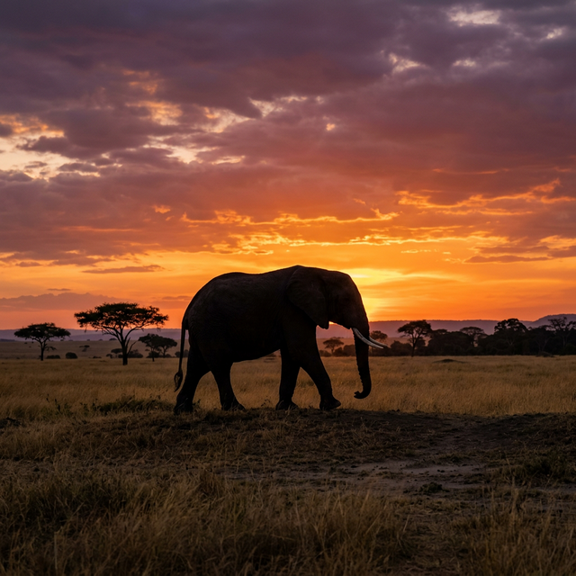

The travel paradigm has shifted. For decades, the measure of a successful trip was purely about personal enjoyment — ticking off bucket-list sights, scoring the cheapest flights, and collecting passport stamps. But as the sheer volume of global tourism has exploded, the environmental and cultural costs of this approach have become impossible to ignore.
In 2026, sustainable travel is no longer a niche concept for eco-warriors; it is a fundamental responsibility for anyone with the privilege to explore the globe. At NomadLens, we believe that travel is an extraordinary force for good — it breaks down prejudices, distributes wealth to developing economies, and fosters a global perspective. But it must be done right.
What is Sustainable Travel?
Sustainable travel (or eco-tourism) simply means traveling in a way that minimizes negative impacts on the environment, respects local cultures, and generates economic benefits for the host communities. It rests on three pillars:
- Environmental: Reducing carbon emissions, minimizing waste, and protecting wildlife.
- Economic: Ensuring your money stays within the local economy rather than multinational corporations.
- Social: Respecting local traditions, dressing appropriately, and interacting with communities on equal, respectful terms.
Decarbonizing Your Journey
The elephant in the room regarding travel is aviation. Flying is incredibly carbon-intensive, representing the vast majority of a traveler's carbon footprint.
Fly Less, Stay Longer
The "slow travel" movement is the antidote to the whirlwind weekend city break. By taking fewer trips but staying longer at your destination, you drastically reduce your aviation emissions while gaining a much deeper understanding of the local culture. When you do fly:
- Fly direct: Takeoffs and landings consume the highest amount of jet fuel. Non-stop flights are significantly more fuel-efficient than connecting routes.
- Fly economy: Premium class seats take up more space and therefore carry a higher per-passenger carbon footprint.
- Pack light: Every kilogram on an aircraft requires fuel to lift. Traveling with just a carry-on reduces your personal fuel consumption.
Overland Alternatives
Europe, Japan, and parts of China boast incredible high-speed rail networks that are often faster cross-country than flying (when factoring in airport transit times) and emit up to 80% less carbon. Whenever a train or bus journey is less than 6 hours, make it your default choice over a short-haul flight.
Where You Spend Your Money Matters
Economic leakage — where tourist dollars are siphoned out of the host country by foreign-owned hotels, airlines, and tour operators — is a massive issue in developing nations. You have the power to change this.
Accommodation
Skip the international hotel chains. Seek out locally owned, independent guesthouses, homestays, or boutique eco-lodges. Certifications like LEED, Green Globe, or EarthCheck can help verify a hotel's environmental claims, but often, the most sustainable choice is a simple, locally run guesthouse that uses natural ventilation and serves locally sourced food.
Tours and Guides
Always hire local guides rather than foreign expats. Not only does this keep your money in the community, but you'll get a far more authentic and nuanced perspective of the destination.
The Zero-Waste Traveler
Many developing nations lack the infrastructure to process single-use plastics, yet tourists often consume vastly more bottled water and plastic bags than locals. As a visitor, you should leave no trace.
- Water purification: Buy a filtered water bottle (like LifeStraw or Grayl) or a UV sterilizer (like SteriPEN). This eliminates the need to buy hundreds of plastic water bottles during a multi-week trip.
- Reusable kit: Always pack a lightweight tote bag, a reusable coffee cup, and bamboo utensils in your daypack. Say no to plastic bags in markets.
- Reef-safe sunscreen: Standard sunscreens containing oxybenzone and octinoxate are highly toxic to coral reefs, causing coral bleaching even in microscopic doses. Always use mineral-based, non-nano titanium dioxide or zinc oxide sunscreens.

Ethical Wildlife Tourism
Interacting with wildlife is a highlight of many trips, but the industry is fraught with exploitation. As a general rule: if you can ride it, hug it, or take a selfie with it, the animal is likely being exploited.
Avoid: Elephant riding, tiger petting zoos, dolphinariums, and "walking with lions" experiences. These rely on cruel practices to break the animals' spirits for human entertainment.
Support: National parks, protected marine reserves, and genuine rehabilitation sanctuaries where animals cannot be touched and are observed exhibiting natural behaviors from a respectful distance. Genuine sanctuaries do not allow breeding or buying and selling of animals.
Cultural Respect and Over-Tourism
Over-tourism occurs when the number of visitors exceeds the capacity of the destination, leading to degraded environments and frustrated locals. Think Venice, Kyoto, or Barcelona in peak season.
Be a Secondary City Traveler
Instead of overwhelming capital cities, explore a country's second or third cities. Instead of Paris, try Lyon; instead of Barcelona, visit Valencia; instead of Kyoto, explore Kanazawa. You'll encounter fewer crowds, lower prices, and often a more authentic slice of local life while distributing tourist wealth more evenly.
Conclusion
Sustainable travel isn't about perfection; it's about making better choices. By being conscious of how you move, where you spend your money, and how you interact with the environment, your travels can become a powerful tool for global conservation and economic equality.